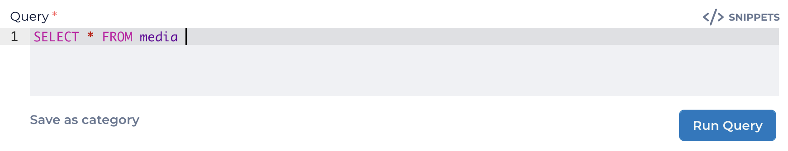

The VoiceBase app allows users to upload, view, listen to, search, map, filter, and sync data. Users may also create Bearer Tokens and add users to an account. A brief description of each item in the left navigation bar is given below, along with links to additional resources. Please reach out to your account manager if you have further questions.
Workbench
The Analytics Workbench is the UI where data is queried, using the VoiceBase Query Language (VBQL).
Start with the basic query below, and use "Snippets" for ideas on how to make queries more precise:
Conversation Search
This is a UI for creating queries to search uploaded data, as an alternative to using VBQL.
Categories
Categories are saved VBQL queries, used to search data. Categories are key to filtering data in Tableau.
Spotting Groups
Create quick keyword spotting lists for automatic keyword tagging.
Connections
Set up connections between Analytics Studio and your AWS S3 bucket, LivePerson messaging, or LivePerson chat. Upload media.
Jobs Queue
Options to sync data between your account and Tableau dashboard data.
Custom Vocab List
Create a list of words to train the speech engine for vocabulary specific to your company or product.
Metadata Mapping
Map custom metadata to generic fields already indexed in the VoiceBase platform.
Media Browser
Review call status, listen to calls, upload or delete media files.
PCI Flag
List of calls flagged for review.
Users
List of all users enabled for this account. Users with Admin privileges may add co-workers here.
My Account
Contact info, Data Settings, Enabled Products, PCI Redaction, list of Predictive Models.
Bearer Tokens
Users may create Bearer Tokens here for use in accessing the VoiceBase API.